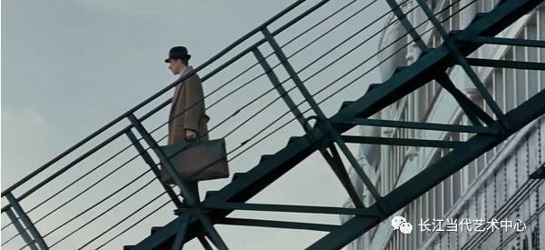

艺术课堂|讨论一部电影—海上钢琴师
连绵不绝的城市，什么都有，除了尽头，没有尽头。
——海上钢琴师
生活在这没有尽头的都市中的你是否也需要一个心灵的港湾，在这漫无边际的都市荒原之中找个地方歇歇脚，与一群志同道合的朋友一起欣赏和探讨一部经典的电影，在茫茫人海中找到一位知己，用自己的心灵去体会人生的冷暖，用自己的眼睛去发现艺术的纯美，用自己的思想和语言重新解读一部电影。这个周末就让我们共同欣赏和解读《海上钢琴师》这部电影，带上你的朋友一起来长江当代艺术中心吧，我们期待你的到来，我们希望看到您思维的火花！
关于电影
海上钢琴师
导演: 朱塞佩·托纳多雷(Giuseppe Tornatore)
主演: 蒂姆·罗斯、比尔·努恩、梅兰尼·蒂埃里
类型: 文艺 / 爱情 / 奇幻
地区: 意大利
片长: 165 分钟
还记得这个孩子吗？1900年的第一天，维珍尼亚号邮轮载着熙熙攘攘的欢呼人群在纽约港靠岸。黑压压的人群从船上下来准备迎接自己的梦想。喧嚣过后，船上除了船员所剩无几。添煤工人Danny Boodman像以往一样偷偷跑到餐厅，搜罗客人遗落下的贵重物品，也不知道这次游轮上的客人是怎么了，记性那么好，带走了所有的财物，却在钢琴架上留下了一个漂亮的婴儿。这给了Danny Boodman惊喜一份太大的惊喜，在漫长而枯燥的海上生涯当中他拥有了一份珍贵的陪伴。他给这个心爱的孩子起名叫1900，以纪念这孩子在新世纪的第一天被他收养。
但1900和Danny Boodman的缘分在1900八岁时走到了尽头，Danny Boodman去世了。1900的世界崩塌了，或许年幼的他还不懂死亡是什么意思，懵懵懂懂之间突然听见远处传来美妙动人的声音，他回过头，身边一个亚洲女人告诉他，这是音乐。
时间过得飞快，转眼1900就已经长大成人了，维珍尼亚号乐队的钢琴师成为了这个孤儿的新身份，虽然他从未下过船，但是已经名声远扬。在一次暴风雨中，他巧遇了正在晕船的Max，两个人十分投缘。从此，Max成了他一生的知己。 Max十分欣赏他的音乐才华，但也同时对他不肯下船的执念感到困惑。他希望1900能向世人展示自己的才华，得到世人的承认，名利双收。但世人向往的生活对1900而言太过遥远，无法理解。宿命也令1900天然地对红尘俗世深怀戒意，他从不敢离船上岸。
一直以来1900沉醉于生活和音乐带给带来的快乐。突然有一天正在录制唱片的他，遇到一个朴素而迷人的女孩，生活的平静被这一次短暂的相遇打破了。他透过窗户与女孩四目相对，爱情就这样在他的心中慢慢生根发芽。
天下没有不散的宴席，有一天女孩离开了维珍尼亚号，痛苦的1900想去找她，并决心登上陌生的陆地。他和所有的船员挥手告别，缓慢的走下船梯，但这个仪式只进行到了一半。他在船梯的中央茫然地看着诺大的纽约，他似乎与这座大都市没有什么缘分，短暂的凝视之后他决定放弃。屹然拿起礼帽抛向远方，然后回头，回到了船上。并对他的密友Max说，我再也不下船了。Max默然接受了这一事实。

许多年后，早已离开维珍尼亚号的Max得知破旧的维珍尼亚号将要被炸掉。他了解1900，相信他还在船上，几经周折，Max最终找到了这位老友。但是1900却执意不肯下船，他固执己见，决定在船上度过自己的一生，陆地对他而言太辽阔了，在他的词典里那里不是自由和机会而是陌生和恐惧，这艘船就是他的一切。Max最终悲伤的离去，在远处目送维珍尼亚号和1900一同被炸得粉碎。 1900就这样和他的钢琴，他的音乐一起长眠于海底。
关于导演
吉赛贝·托纳多雷
意大利写实电影流派的新贵导演，1956年出生于西西里岛靠近巴勒莫（Palermo）的
巴格里亚镇。或许大家对他的姓名还不熟悉，那让我们来看看他都有哪些重要的作品吧！
导演作品
西西里的美丽传说Malèna (2000)
海上钢琴师Leggenda del pianista sull'oceano, La (1998年)
新天堂星探Uomo delle stelle, L' (1995年)
幽国车站Pura formalità, Una (1994年)
天伦之旅Stanno tutti bene (1990年)
天堂电影院Cinema Paradiso (1989年)
编剧作品
西西里的美丽传说Malèna (2000年)
海上钢琴师Leggenda del pianistasull'oceano, La (1998年)
新天堂星探Uomo delle stelle, L' (1995年)
幽国车站Pura formalità, Una (1994年)
天堂电影院Cinema Paradiso (1989年)
关于主演
蒂姆·罗斯
1961年5月14日出生于英国伦敦，英国影视演员，导演。
2017
第32届美国独立精神奖
最佳男主角(提名) 获奖影片：慢性
2014
第13届华盛顿影评人协会奖
最佳群戏(提名) 获奖影片：塞尔玛
2012
第15届英国独立电影奖
最佳男主角(提名) 获奖影片：拼贴幸福
1996
第68届奥斯卡金像奖
最佳男配角(提名) 获奖影片：赤胆豪情
而且我们的这位蒂姆·罗斯还出演过大艺术家，文森特·梵高哦。
我们的课堂
活动名称：
艺术课堂|讨论一部电影—海上钢琴师
活动时间：
2017年7月28日（星期五） 18:30—21:30
活动地点：
重庆市南岸区南滨路钟楼广场，长江当代美术馆艺术中心（艺术商品厅内）
报名：
仅限50人，请小伙伴们抓紧时间哦
联系电话（微信）：18875244876 张老师
活动流程：
18:30—18:40 电影爱好者入场，主持人组织开场分享电影背后的故事
18:40—21:15 回顾经典
21:15—21:30 电影爱好者讨论
我们的服务：
免费场地，免费WiFi，舒适的座椅和高大上的环境，另外如果你是我们艺术中心的学员，还会得到免费的饮料
我们的门槛：
这么高大上的活动自然是有门槛的哦，你需要具备以下条件：1、热爱艺术 2、喜欢电影 3、拥有自己的艺术观点，能够和现场的朋友们一起讨论电影 4、能够爱护我们的公共环境